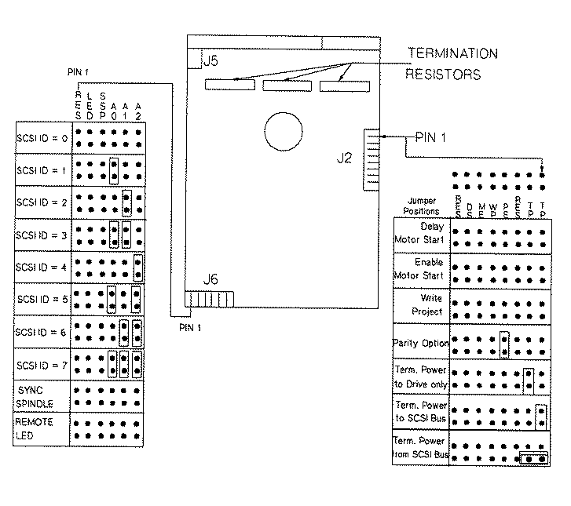

Caution
The drive options are selected on J2. The drive SCSI ID (address) is set on J5 (see Figure). Table 1 shows how the option pin-sets for the 3.5-inch hard disk drive (A2958A) should be set. Table 2 provides a functional description of the J2 jumpers.
A pin-set is shorted with a jumper installed or open without a jumper. The J5 option settings are shown on the following Figure.
| Function | Pin-Set | Internal Setting |
| Terminator Power (TP) | 1,2 | Open (Position A) if last device on bus. See Figure |
| Reserved (RES) | 3 | Open |
| Parity (PE) | 4 | Jumpered |
| Write Protect (WP) | 5 | Open |
| Motor Enable | 6 | Open |
| Delay Start (DS) | 7 | Open |
Table 1: Option Settings for 3.5-inch Hard Disk Drive (A2958)
| Jumper | Jumper | Jumper Function Description |
| TP (Pins 3-4) | TP (Pins 1-2) | |
| Off | Off | No terminator power is connected to drive terminators or SCSI bus I/O pin 26. |
| On | Off | Drive supplies its own terminator power only. |
| Off | On | Drive supplies power to I/O pin 26 of SCSI bus, none to internal terminators. |
| On | On | Drive supplies terminator power to itself (internal connection) and to I/O pin 26 of SCSI bus. |
| TP Position A | TP Position A | |
| On | This horizontally positioned jumper across the two TP positions nearest the PCB edge connects terminator power from SCSI bus I/O pin 26 to the drive's internal terminators. (For single-ended only.) Set if it is the last device on the bus. | |
| RES | RES | |
| Off | Reserved | |
| PE | PE | |
| On | Parity checking and parity error reporting by the drive is enabled. | |
| Off | Drive does not report result of parity checking to host. | |
| WP | WP | |
| On | Entire drive is write protected. | |
| Off | Drive is not write protected. | |
| DS | ME | |
| Off | Off | Spindle starts immediately after power up. |
| Off | On | Drive spindle does not start until Start unit command is received from host. |
| On | Off | Spindle Startup is delayed by SCSI ID times 12 seconds after power is applied, i.e. drive 0 spindle starts immediately when DC power is connected, drive 1 starts after 12-second delay, drive 2 after 24-second delay. |
| On | On | Drive spindle starts when Start Unit command is received from the ME jumper is installed. |
Table 2:Jumper Function Description

Figure: A2958A 3.5-inch Hard Disk Drive Option Select Connectors